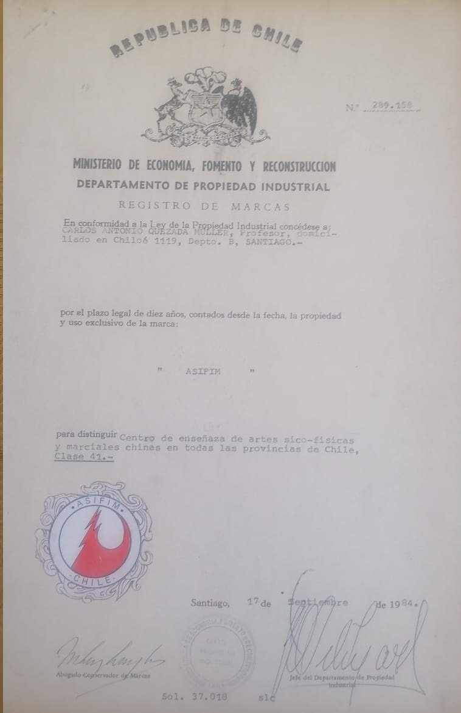

Origen · Tradición · Fundador
Carlos Quezada Müller
Qigong · Taoísmo · Bienestar · Arte Marcial Terapéutica

ASIFIM fue fundado en Chile en 1984 por
Carlos Quezada Müller,
como resultado de décadas de estudio,
práctica y enseñanza de disciplinas
marciales, energéticas, terapéuticas y filosóficas.
Con más de cinco décadas de trayectoria,
es uno de los pioneros en Chile en la investigación,
difusión y formación del Qigong,
Tai Chi Chuan, Sanda y otras disciplinas
tradicionales de raíz china y taoísta.
Actualmente es representante nacional del estilo Sanda-Qigong, reconocido por la DGMN, con grado de Cinta Negra 10° Thuan.
Actualmente es representante nacional del estilo Sanda-Qigong, reconocido por la DGMN, con grado de Cinta Negra 10° Thuan.

A lo largo de su trayectoria ha integrado
artes marciales, trabajo corporal,
medicina oriental, respiración,
filosofía taoísta y procesos de desarrollo humano,
desarrollando una síntesis metodológica
propia conocida como el
Método ASIFIM.
Este enfoque utiliza la práctica,
la experiencia directa,
la percepción consciente,
el movimiento,
la disciplina y el simbolismo
como herramientas de integración física,
emocional y mental.
La autonomía, la autorresponsabilidad y el desarrollo de criterio propio constituyen pilares fundamentales dentro de su enseñanza.
La autonomía, la autorresponsabilidad y el desarrollo de criterio propio constituyen pilares fundamentales dentro de su enseñanza.
“La disciplina no busca limitar al individuo,
sino entregarle herramientas para sostenerse con conciencia.”
Paralelamente, Carlos Quezada Müller ha desarrollado
una línea artística y performática propia,
entendiendo el arte como una herramienta
de exploración simbólica,
integración psíquica
y cuestionamiento consciente
de las estructuras establecidas.